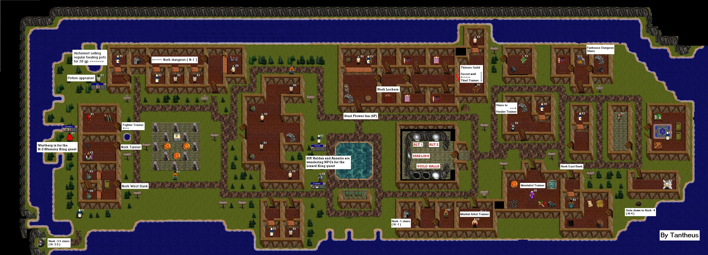

|  |
| Nork Town: |
|
Nork is the town everyone starts at. Places of interest are NW healing potion seller, Fighter trainer, Tanner who turns dead creatures into armor, West Bank, Steel Flower Inn ( also known as SF ), Martial Artist Trainer, Healer Trainer, Mentalist Trainer, Thief Trainer ( located in the hidden thieves den east part of Steel Flower Inn, Nork Portals ( going to Nork ATL1, nork ALT2, Maeling Town and Lower Guild Hall ),East Bank, Drop down hole for Nork -4 ( N-4 ), 2 different entrances for Nork -1 ( N-1 good place to start earning exp and gold ), Funhouse dungeon stairs located in NE Inn and SW tip of Nork are stairs leading down to Nork -3.5 ( N-3.5 : Located here is a Boat to the Land of Aleria ).
|